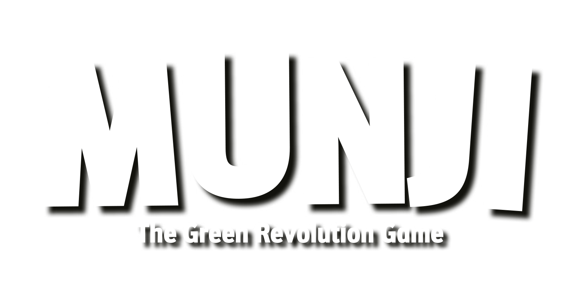
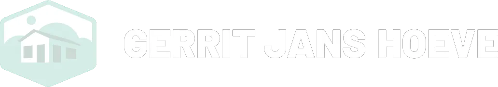

Hoe we de webshop van Voetbal International toekomstbestendig maakten
Voetbal International (VI) kwam bij ons met een technisch verouderde webshop die toe was aan vernieuwing. Wij migreerden naar een nieuw platform, verbeterden stabiliteit en gebruikservaring, en maakte ...
Fresh Foward en LUNAR Institute: zo ontwikkelden we twee unieke websites met dezelfde basis
Twee organisaties met een eigen identiteit, maar met dezelfde kijk op vernieuwing. Fresh Forward helpt organisaties hun visie en strategie door te vertalen naar mindset en gedrag binnen teams. LUNAR I ...
Website Dushi Huis: een digitaal thuis waar het leven gevierd wordt
Dushi Huis biedt kinderen en jongeren van 4 tot 18+ jaar, die niet meer thuis kunnen wonen, een kleinschalige, veilige woonplek in een echt huis. Daarom maakten we voor Dushi Huis een website die voel ...

MUNJI: zo bouwden we een webshop voor dit bordspel
MUNJI – The Green Revolution Game is een nieuw bordspel waarin spelers de wereld vergroenen. Hun vraag aan ons was helder: “Kunnen jullie een webshop bouwen?” Dat leek ons een mooie ...
Een eregalerij voor Jurriëns
Wat hebben Felix Meritis, Gran Hotel Amrâth in Amsterdam en het Muntgebouw in Utrecht gemeen? Deze historische en monumentale gebouwen zijn weer in oude glorie hersteld door Jurriëns. Van restauratie ...

EURid: een website voor de .eu-domeinnamen
EURid is de uitgever van alle domeinnamen die eindigen op .eu, .ею (Cyrillisch schrift) en .ευ (Grieks schrift). Het gedeelte achter de ‘.’ in een websitelink heet een domeinextensie. Dus bij eurid.eu ...
Zo versimpelden we de complexe website van Invest International
Invest International kwam met de wens voor een website die naadloos aansluit op de vragen van hun doelgroep. Ook wilden ze graag gelijk duidelijk maken wat ze doen. Een mooie uitdaging, vonden we. We ...

Een multisite voor Gerrit Jans Hoeve
Hoe zorg je ervoor dat 5 websites verschillend zijn, maar toch eenheid uitstralen? Met deze uitdagende vraag gingen we aan de slag voor Gerrit Jans Hoeve. Een bedrijf dat bestaat uit de vakantieparken ...